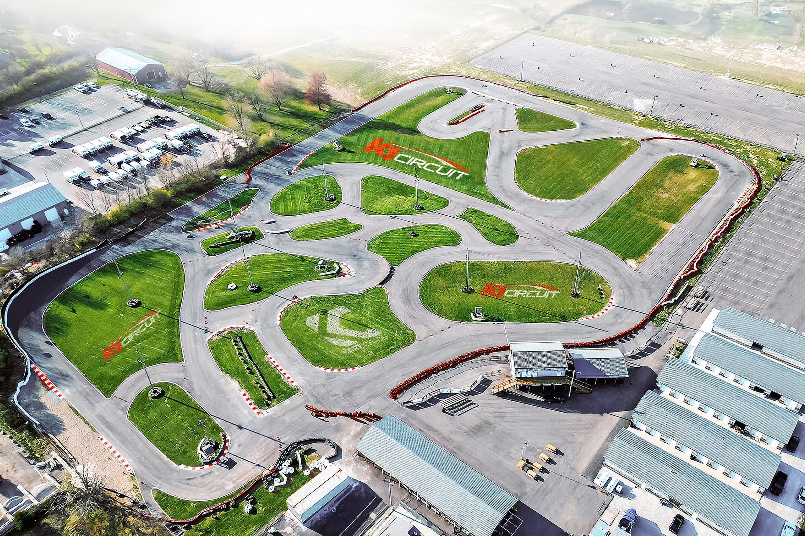

Перший заїзд: що варто знати?
Щоб перше знайомство з картингом було комфортним, достатньо приїхати трохи заздалегідь, уважно послухати інструктаж і не поспішати на трасі.
Короткий список підготовки
- Оберіть зручний одяг, що не обмежує рухів.
- Приїдьте за 15–20 хвилин до запланованого заїзду.
- Перед стартом уточніть у працівників, як правильно сісти в карт.
- Перевірте, чи шолом за розміром і надійно застібнутий.
- Під час заїзду дотримуйтеся дистанції та сигналів інструктора.
Як проходить перше відвідування
| Етап | Що відбувається | На що звернути увагу |
|---|---|---|
| Прибуття | Реєстрація та підготовка до заїзду | Залиште час на організаційні моменти |
| Інструктаж | Знайомство з керуванням і сигналами | Запитайте, якщо щось незрозуміло |
| Заїзд | Перші кола на трасі | Їдьте у власному темпі та слухайте інструктора |
Пам’ятайте: перший заїзд — це насамперед знайомство з картом і трасою. Зосередьтеся на безпечному керуванні, а швидкість прийде з досвідом.
Побачити трасу ближче
